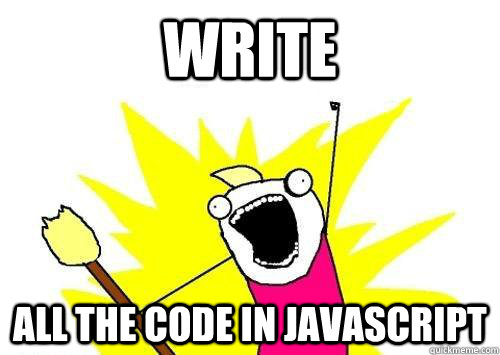

Node.js
An Introduction
March 20th, 2016Why talk about Node.js in a Meteor.js Meetup?
What?

In simple words Node.js is ‘server-side JavaScript’
In not-so-simple words Node.js is a high- performance network applications framework, well optimized for high concurrent environments.
History
- 2009 • Created by Ryan Dahl • Version 1 in 2009 to revolutionize web applications • Inspired by Ruby Mongrel web server.
- 2010 • Joyent sponsors Node.js development
- 2011 • First released version of Node.js available to the public • Initial version only available for Linux. • Microsoft partners with Joyent to provide Windows support
- 2012 • Complete rewrite of central libraries . . .
- 2016 • Latest release v5.8.0
Huge Success


Why ?
- Node establishes real-time, two-way connections!
- Node.js uses an event-driven, non-blocking I/O model, which makes it lightweight.
- It makes use of event-loops via JavaScript’s callback functionality to implement the non- blocking I/O.
Why use server side JavaScript at all?
Did I come to Node.js Meetup ?
So, does learning Node.js help in Meteor.js development?
Why so?
Meteor is ultra portable and the developer does not need to know about NodeJS at all. So when you are installing Meteor, it will download something called dev_bundle which has NodeJS and all the NPM modules needed by Meteor. All these modules are pre-compiled for your platform. That makes getting started with Meteor easier and quicker.
... Yay!
Is Meteor Faster Than Node?
It’s a simple fact that the overhead incurred by having any framework makes it slower than a bare-metal web application.
Thanks for your Patience.
Questions?
Connect with me :
- mail@anirudha.org
- 888 462 5926